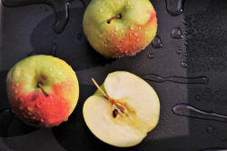
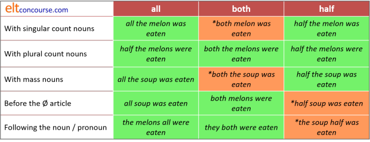
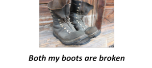

Pre- and post-determiners

If you have followed the guide to determiners on this site, you will probably have noticed that determiners rarely co-occur. We cannot, for example, have:
- *the a car
- *that the man
- *my the house
etc. This restriction, incidentally, does not exist in a range of other languages.
However, there is a distinct class of determiners which function
to modify other determiners. What is included in this
class is a matter of some disagreement. The approach taken
here is to consider first which determiners most authorities will
agree can function as pre-determiners and then to consider some more
marginal cases which, at least for teaching purposes, can be analysed
in the same way.
Later in the guide, we will get to a brief consideration of
post-determiners.
In what follows, we will class the zero article as a determiner. In an expression such as:
All luggage must be weighed
it appears that the word all is the only determiner
present. However, because luggage is a mass noun it
can be analysed as being preceded by the zero article. Then
the structure is
all + zero article [Ø] + mass noun
and all may be classed as a pre-determiner.
Missing from the following is any mention (apart from here) of
what are called restrictive or exclusive adverbs. They
include, for example:
That just
the thing I need
It's only a small spider
She is solely the person in
charge
He's merely
the assistant
It appears to be
simply a question of
money
and are excluded here because they are considered in the guide to
adverbs. These adverbials refer to the whole verb or noun phrase and
are not, strictly speaking, pre-determiners. They are
sometimes called limiters.
In many analyses, the list of pre-determiners is very limited and includes only:
- all, both, half
- multipliers: double, twice, eight times etc.
- fractions: a third, one quarter, a thousandth etc. (but, note, not half)
We will be slightly more adventurous than that but will note when what we include in this guide is not an analysis shared by everyone.
It is also worth making it clear now that only one pre-determiner per phrase is permissible. In other words, these items are all mutually exclusive and cannot co-occur.
|  |
all, both, half |
These pre-determiners function in slightly different ways.
- With singular count nouns we can use half and all but not both
- For example:
half a loaf is better than none
half this job will be done soon
all my house has been decorated
he waited all that day
but not:
*both my job was done - With plural count nouns we can use all three pre-determiners but half cannot be used with the zero article
- For example:
half those oranges are rotten
both the children came
all the men went home and stayed there
all lions are unpredictable
both (the) dogs are friendly
but not with the zero article:
*half people arrived
*half trains are always late in my country
The predeterminer (or determiner) both refers to dual entities only. - With mass nouns we can use half or all but not both. Additionally, only all can be used before the zero article
- For example:
half my money is already gone
all the information is not needed
all luggage will be returned at baggage reclaim [zero article]
but not:
*half chocolate is gone
*both the sugar is gone
 |
notice |
- We cannot use all, both or half before
other quantifier determiners:
- *half every, *both neither, *all each, *half some, *both no, *all enough are all disallowed for obvious reasons of the meaning they carry.
- There is an informal use of half in which this
rule can be broken:
I don't have half enough time to do this
but this only works with enough.
- These three pre-determiners have alternative of-constructions
such as:
all of the time
both of the boys
half of the house
etc.
Although this is an optional structure when the noun is being determined, it must be used when we are pre-modifying a pronoun so we have:
all of it was wasted
both of them came
half of it was used
half of them were drunk
but not
*both them arrived
*half it was rotten
*all them were sold
etc.
Moral: if in doubt, use the of structure. - All three can act as pronouns (pro-forms) rather than
determiners in their own right, slightly formally in some views:
All arrived in time
Both broke immediately
Half was rotten - Only all and both can follow the noun or
pronoun they determine:
the ladies all arrived late
the children both cried
They all complained
but not:
*the cake half was eaten - The pre-determiner both is not so much plural as dual (a concept taken much further in some languages). It shares this characteristic with the determiners neither and either.
- Both also functions adverbially as an additive and
equaliser and
is considered in the guide to adverbs, linked from the list
below. One example will do:
John is both a good manager and an approachable boss
Here's a summary of these three:

 |
multipliers: double, triple, quadruple, once, twice, three times, four times ... |
These are less complicated and can occur:
- With singular count nouns, plural count nouns and mass nouns
- twice the price
double that amount
three times the weight
20 times his ability - double the chairs will be
needed
quadruple the effort
etc. - Before the determiners a, per, every, each, multipliers can form distributives
- once every term
three times a year
six times each month
20 times per century
|
|
notice |
- There is no parallel of-construction so we cannot
have, e.g.:
*double of the work
*three times of his height - None of these pre-determiners can follow the noun or pronoun
so we can't have, e.g.:
*the amount three times
*the price quadruple of the other - There are some arguably old fashioned or rare terms which it may be best to avoid except at the highest levels including, e.g., thrice, sextuple etc.
fractions: one-sixth, two-fifths, three-quarters etc. |
These, too, are fairly straightforward but it is worth noting some things:
- All these expressions have alternative, parallel of-constructions
and these are usually preferred. Some of the examples
without of in the following sound strange to most
native speakers:
one-third the money > one-third of the money
sixth-sevenths the time > sixth-sevenths of the time
three-quarters the effort > three-quarters of the effort
five-eighths the distance > five-eighths of the distance
etc. - The pre-determiner half is not included in this
section because it has some characteristics which are not shared
by fraction pre-determiners, especially when it comes to the use
of the of-construction with count nouns:
We can have:
half of those vegetables are rotten
half those vegetables are rotten
one third of those vegetables are rotten
half my work has been wasted
one quarter of my work has been wasted
but not
*one third those vegetables are rotten
or
*one quarter my work has been wasted
etc. because only half can be used without the of-construction before demonstrative and possessive determiners. - Some fractions in English are a real challenge to pronounce
and spell. Consider particularly sixths,
eighths, sixtieths (respectively, /sɪksθs/, /eɪtθs/,
/ˈsɪk.stɪəθs/) etc.
Many languages simply do not allow consonant clusters such as /ksθs/ and speakers of those languages (Japanese and Arabic, for example, as well as some south-east Asian languages) will find it very hard to get them right.
Speakers of Slavic languages will have less difficulty because those languages routinely contain quite forbidding consonant clusters. The Slovak word štvrť, for example, (pronounced /ʃtvr̩tʲ/ and meaning quarter) contains no vowels at all. Germanic languages, too, contain frequent consonant clusters.
Do not be surprised, therefore, if fractions are pronounced with intervening vowels inserted between the consonants (e.g., /sɪəksəθəs/ instead of /sɪksθs/).
In fact, native speakers will often reduce the clusters for ease when speaking rapidly and pronounce sixths as /sɪks/ (eliding the /θs/) so it slightly perverse to insist that learners shouldn't do this.
 |
partitive phrases as pre-determiners |
There is a separate guide to partitives and classifiers on this site, linked in the list of related guides at the end so here it is enough to note that many partitive phrases can pre-determine. For example:
- restrictive partitives
- which can only be used with a single or very limited range
of nouns. For example:
I'd like a rasher of that bacon
She broke a pane of the glass
He kept a lock of her hair - typical partitives
- which can only be used with nouns sharing a particular
characteristic (thinness, irregularity, cuboid etc.). For
example:
He put in a slice of the lime
He added a cube of the ice
and a lump of the sugar - general partitives
- which can be used with almost all mass nouns. For
example:
I gave him a piece of my mind
Can a have a bit of the cake?
Give me a chunk of that bread
 |
attitudinal pre-determiners: such, what, rather, quite |
It is not the case that all grammarians would include these four words in the category of pre-determiner but, because they share structural characteristics with the other forms discussed above, it is legitimate for teaching purposes to include them. Some analyses will call these intensifying pre-determiners because they serve to amplify or tone down the strength of the noun phrase which follows. What they all do is communicate the speaker / writer's attitude.
- such and rather
- These words have other functions, of course, operating as
adverbials in, e.g., such beautiful work should be
exhibited, rather nasty weather etc.
Here we are concerned with their function as a pre-determiner when they serve to emphasise the speaker's attitude as in, e.g.:
don't be such a baby (= you are being very like a baby)
she is such a nice woman (= she is a very nice woman)
this is such good food (= this is very good food [zero article])
he is rather a stupid player (= more than usually stupid)
they have rather a nice house (= more than usually nice)
The reason many analyses do not include these as a proper pre-determiners is that they can only pre-determine the indefinite or zero article and not the range of possessives and demonstratives etc. which have been exemplified for the real pre-determiners above. We cannot have, therefore:
*such my house
*such those eggs
*such the cat
*rather her car
*rather those apples
etc.
In American English rather is confined to its adverb function but in British English, it is used as a pre-determiner with much the same, although slightly less emphatic, meaning as such. - what
- This word, too, clearly has a number of other uses in the
language but as a pre-determiner it functions to express
surprise, joy or disappointment in exclamations such as:
What an exceptional result!
What gorgeous weather! [zero article]
What a very stupid thing to say!
Again, this word can only pre-determine the indefinite or zero articles. - quite
- This is an anomalous word because it can carry two distinct
attitudinal messages:
1) Positive attitude when used with a non-gradable adjective in the noun phrase:
It was a quite fantastic show
It was a quite disgusting performance
2) Negative attitude when used in other environments:
It was a quite interesting development (i.e., not very interesting)
Sentence stress plays a role here and the stress or lack of it on the pre-determiner can imply a down-toning or intensifying meaning. De-stress the predeterminer and the adjective is emphasised; stress it and the downtoning effect is expressed.
It is also anomalous in that is can occur with the definite article as in, e.g.:
That's quite the best tool for the job
|
|
notice |
The determiners rather and quite can act as post-determiners,
following the determiner proper so we can have:
It was a rather / quite interesting
development
It was rather / quite an interesting
development
That's rather / quite interesting information (zero
article)
(Arguably, in fact, putting the item after the indefinite or zero
article simply results in its acting as an adverb pre-modifying the
adjective and not a determiner at all.)
We cannot do this with what and such so we cannot have:
*A what beautiful picture
*A such beautiful picture
Summary

 |
Pre-, Central and Post-determiners |
So far, the discussion has focused on pre-determiners which modify
determiners proper.
There is, however, an alternative way to analyse somewhat rare
phrases which contain three determiners. In this case, we can
refer to them separately as pre-, central and post-determiners, like
this:
| pre-determiners | central determiners | post-determiners | Examples | |
| multipliers | articles | numerals ordinals |
twice the first
price both my last letters all those first books half her many friends all the six children a third of those 15 groups |
eight times that
last number all my first ideas half those twenty people twice my previous salary both the next films half the second class |
| both, all, half | demonstratives | sequencers | ||
| fractions | possessives | many | ||
The issue to notice, explained in more detail in the guide to
determiners is that pre-determining expressions with the preposition
of function as partitives rather than determiners proper so
we can have, e.g.:
many of her friends
both of the children
a quarter of my salary
all of those six letters
and general partitives conventionally take the first position in the
sequence.
Restricted partitives, because they are determined by the nature of
the noun, often take the place of post-determiners so we may
encounter, e.g.:
both my rashers of bacon
half these loaves of bread
etc. and in these cases, the noun phrase rather than a single noun
is determined.
The distinction between the quantifiers plus of and
generalised partitives proper lies in the fact that the former
cannot be pluralised so while we allow, e.g.:
a bit of information
some pieces of information
a pile of books
four piles of books
and so on, no parallel constructions can be used with the
quantifiers except the fractional ones. We allow, therefore:
three quarters of these apples
five sixths of the first group
but no pluralisation of words like many or several
is permissible. That is not the case in some languages.
 |
teaching these forms |
Other languages
Your learners' language(s) will
almost certainly handle these sorts of concepts differently. For
example, it is perfectly OK in Greek to have the my friend
or that the dog. Romance languages, such as Italian
and Spanish, but not French, allow the possessive determiner to
co-occur with the article, too.
In some languages, Romanian, Bulgarian, and Swedish, for example,
affixes (often suffixes) act as determiners.
Other languages, such as Finnish, also have possessive affixes doing
a similar job.
Many of the expressions with the pronoun of acting as partitives of
one kind or another will be realized through the use of genitive
case structures in languages which depend on case marking to express
relationships.
The way to bet is to presume from the outset that pre- and post-determiners will
- be used differently in your learners' language(s) and have different co-occurrence rules
- be virtually untranslatable
- be ordered differently in your learners' first language(s)
- cause problems if they are presented in a piecemeal fashion with no consideration of parallel forms
- cause problems if they are presented all together in an overwhelming mass of data
Contexts
It is very important (not just here) to present these forms in a clear context for which graphics and realia are the obvious source because concepts do not coincide across languages.
For example, it is easy enough to come up with visuals such as:
 |
 |
|
How do you feel? It's quite an interesting painting What a beautiful painting What an awful painting It's such a beautiful painting It's rather a boring painting Anything else? Discuss with two other students Find two people who agree with you etc. |
|
At lower levels, especially, a little Total Physical Response
teaching may be appropriate. For example:
John, give all the men a piece of blue
paper.
Mary, give all the students a piece of white paper.
Arthur, give both a green and a white piece of paper to a student
June, give both your pieces of paper to Fred
etc.
Timing
There is almost no point at all in tackling this area at all if the distinction between count and mass noun uses is unclear to your students.
| Related guides | |
| determiners | for more on the forms of determiners in general |
| partitives | a guide to partitives and classifiers |
| adverbs | for more on restrictive or exclusive adverbs |
| adverbials | for more on other forms of verb-phrase modification |
| adverbial intensifiers | for more on this class of intensifying adverbials which serve to emphasise, amplify or tone down meanings |